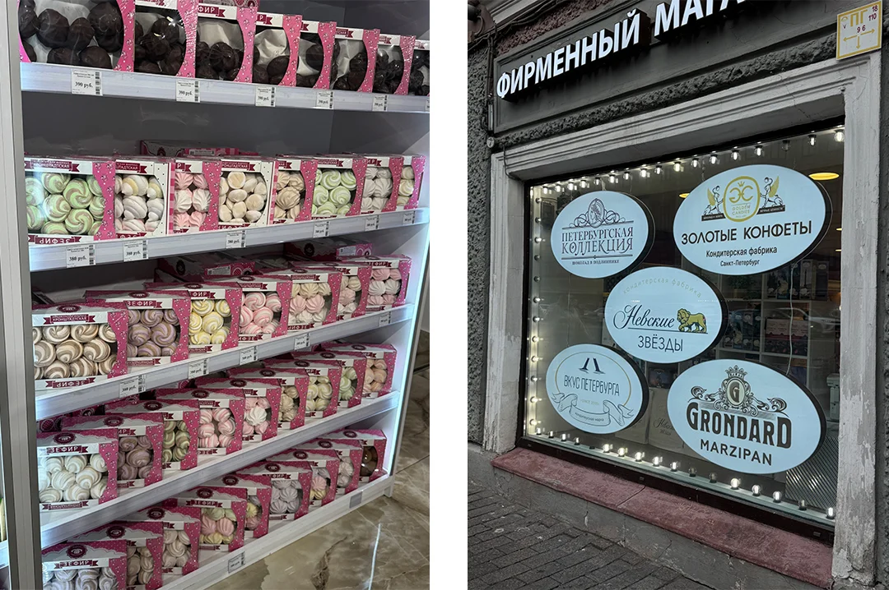
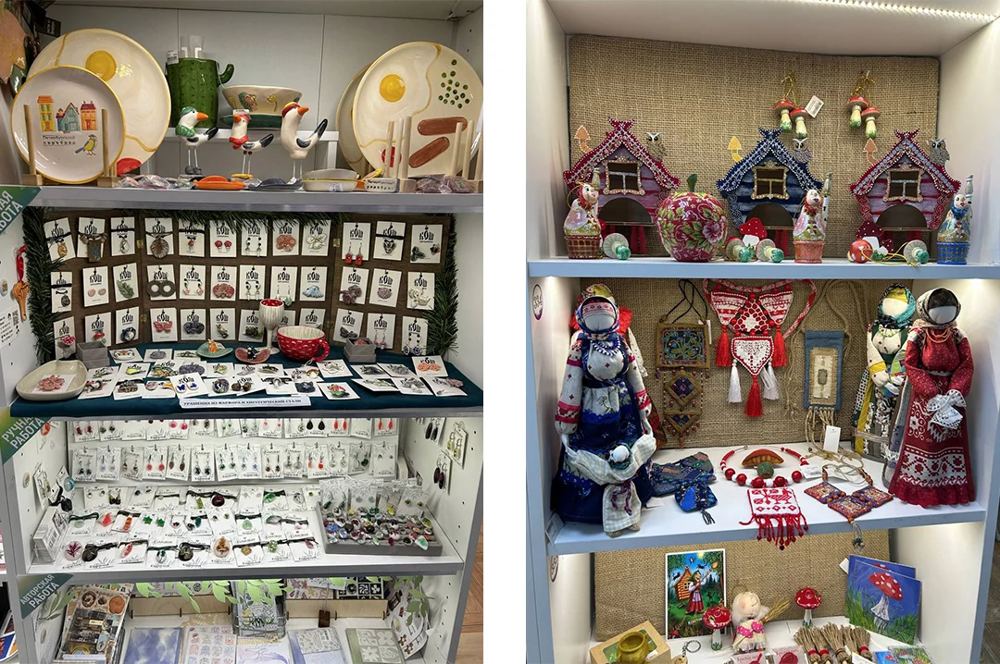
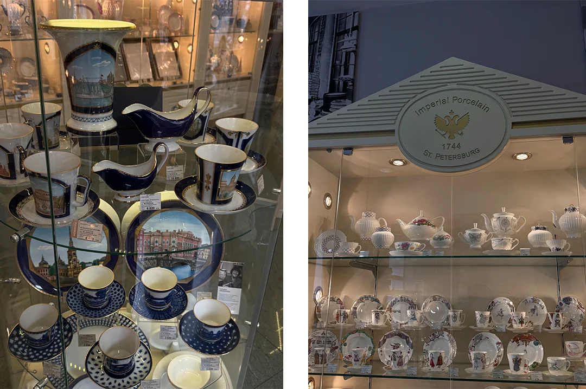

От фарфора до сладостей: какие сувениры привезти из Петербурга
Автор: Диана Акчурина
Идеи сувениров и подарков из Петербурга: разные варианты памятных покупок и локальных вещей. Полезно для составления списка покупок перед отъездом.
Читать полную статью на блоге Островка →


Фото: Диана АкчуринаИсточник изображения


Фото: Диана АкчуринаИсточник изображения


Фото: Диана АкчуринаИсточник изображения